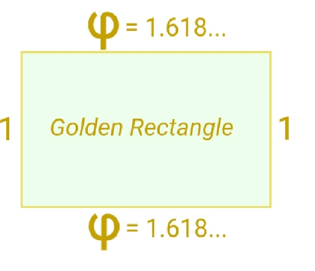
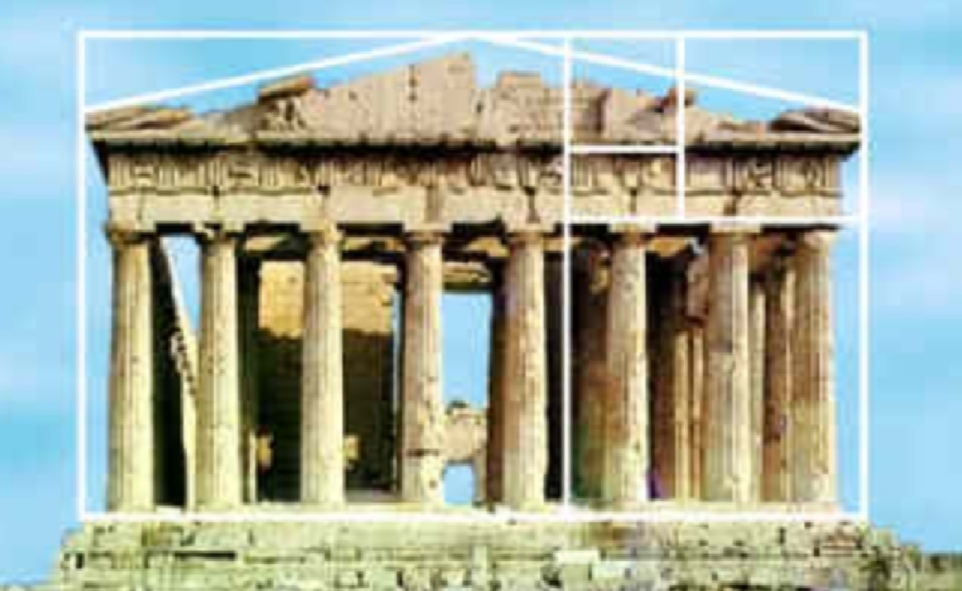

GOLDEN RATIO
The golden ratio (symbol is the Greek letter "phi" shown at left) is a very special number approximately equal to 1.618
It appears many times in geometry, art, architecture and other areas.
The Idea Behind It
We find the golden ratio when we divide a line into two parts so that:
Beauty

This rectangle has been made using the Golden Ratio, Looks like a typical frame for a painting, doesn't it?
Some artists and architects believe the Golden Ratio makes the most pleasing and beautiful shape.
Do you think it is the most pleasing rectangle?
Maybe you do or don't, that is up to you!

Many buildings and artworks have the Golden Ratio in them, such as the Parthenon in Greece, but it is not really known if it was designed that way.
The Actual Value
The Golden Ratio is equal to:
1.61803398874989484820... (etc.)
The digits just keep on going, with no pattern. In fact the Golden Ratio is known to be an Irrational Number.
Formula
We saw above that the Golden Ratio has this property:
a⁄b = a+b⁄a
We can split the right-hand fraction like this:
a⁄b = a⁄a + b⁄a
a⁄b is the Golden Ratio φ, a⁄a=1 and b⁄a = 1⁄φ, which gets us:
φ = 1 + 1⁄φ
So the Golden Ratio can be defined in terms of itself!
Let us test it using just a few digits of accuracy:
φ = 1 + 1⁄1.618= 1 + 0.61805...
= 1.61805...With more digits we would be more accurate.
Fibonacci Sequence
There is a special relationship between the Golden Ratio and the Fibonacci Sequence:
0, 1, 1, 2, 3, 5, 8, 13, 21, 34, ...
(The next number is found by adding up the two numbers before it.)
And here is a surprise: when we take any two successive (one after the other) Fibonacci Numbers, their ratio is very close to the Golden Ratio.
In fact, the bigger the pair of Fibonacci Numbers, the closer the approximation. Let us try a few:
| A | B | B/A |
| 2 | 3 | 1.5 |
| 3 | 5 | 1.6666666...... |
| 5 | 8 | 1.6 |
| 8 | 13 | 1.625 |
| ..... | ..... | ..... |
| 144 | 233 | 1.61805555... |
| 233 | 377 | 1.6180257... |
| ..... | ..... | ..... |
We don't have to start with 2 and 3, here I randomly chose 192 and 16 (and got the sequence 192, 16, 208, 224, 432, 656, 1088, 1744, 2832, 4576, 7408, 11984, 19392, 31376, ...):
| A | B | B/A |
| 192 | 16 | 0.083333... |
| 16 | 208 | 13 |
| 208 | 224 | 1.076923... |
| 224 | 432 | 1.928571... |
| ..... | ..... | ..... |
| 7408 | 11984 | 1.617710... |
| 11984 | 19392 | 1.618157... |
| ..... | ..... | ..... |
Other Names
The Golden Ratio is also sometimes called the golden section, golden mean, golden number, divine proportion, divine section and golden proportion.